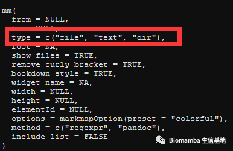
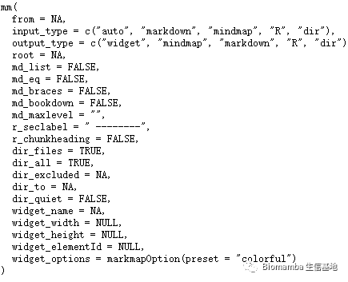
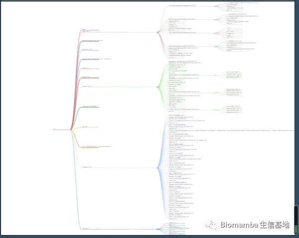

答读者问 （十三）查看Seurat对象时的ERROR：type='text'
原文：https://mp.weixin.qq.com/s?__biz=MzAwMzIzOTk5OQ==&mid=2247485859&idx=1&sn=a014c4cb6034551e57c70820c7781e49&chksm=9b3f70f3ac48f9e52620e3ff197eb98e58836e8bb6baad634387a521fdda1e4a194356517c73#rd 合集：单细胞教程全收录 / 答读者问
往期回顾
答读者问 （五）如何实现各物种基因的ID/symbol的转换
答读者问 （十一）如何一次性读取一个目录下的cellranger输出文件？
答读者问 （十二）ERROR: have no zero exit status
问题
我们在“手把手教你做单细胞测序数据分析（二）——各类输入文件读取”的文末教过大家如何查看Seurat对象的数据结构，后台中运行最后一行时经常有粉丝报错，集中回答一下。

怎么解决问题
这个问题发生的根本原因在于mm函数所在的mindr包 更新了，在1.2.3版本（左图）中mm中是存在type参数的，而在1.3.3中type函数被拆解为了input_type和output_type（实际上原来的type对应这里的input_type），并且参数的选项也有所更新，很遗憾'text'这一选项不存在了，而更新后的几个选项（"auto", "markdown", "mindmap", "R", "dir"）我也都替大家尝试过了，并不能成功运行。
,


显然，用新的版本已经无法解决这个问题了，只能按下面的代码下载老版本了。
-
-
-
-
- *
-
-
-
remove.packages('mindr')#先把原来的卸了require(devtools)install_version("mindr", version = "1.2.3",repos = "http://cran.us.r-project.org")#安装更早的版本packageVersion('mindr')#安装后检查一下版本
此外，我也把这个函数生成的文件存成html，需要的同学可以从百度云链接中下载。
链接：https://pan.baidu.com/s/1iMK3xlVU-LQhrOan_qpefQ?pwd=uo8l
提取码：uo8l

其实R语言中报错的根本原因无非就两种：版本和数据格式。大家只要检查好这两点，很难遇到报错。几乎每次教程的底部我都会附上我所用R包的版本，最好还是保证版本与我一致，避免不必要的麻烦，毕竟代码在我这都是可以跑通的，一些你们遇到的报错我也不曾遇到过（基础报错除外）。除了按照上述的方法去一一安装与我相同的版本，以下还有两种方案供大家选择： 1、超过600种的常用生物信息学package我已经在R3.6、R4.0、R4.1中给大家安装好了，可以直接加载，有需要的同学请自取：给你安排一个懂生信的工具人（六）：再也不怕装不上packages了 2、以后的教程都会在西柚云中演示，给你们申请到了免费的版本，大家可以去用免费版跟着学：给你们申请到了免费的128GB云服务器

如何联系我们
 最近发现后台中有一些消息我没能及时看到并答复，微信后台中超过48h后便不允许回复读者消息，这里还是再给大家留一下答疑的客服号，方便大家随时交流。微信号可以点击喜欢作者 后自动回复里有。欢迎大家向我咨询或者提供建议。大家可以阅读完这几篇之后添加我：如何搜索公众号过往发布内容
答疑公约
笑一笑也就算了
最近发现后台中有一些消息我没能及时看到并答复，微信后台中超过48h后便不允许回复读者消息，这里还是再给大家留一下答疑的客服号，方便大家随时交流。微信号可以点击喜欢作者 后自动回复里有。欢迎大家向我咨询或者提供建议。大家可以阅读完这几篇之后添加我：如何搜索公众号过往发布内容
答疑公约
笑一笑也就算了